模组工具更新记录
中文 | English
各日期记录当时发布的工具版本与操作。新建工程请看 项目初始化。
旧版发布渠道可供查阅 Mega 和 123 云盘。
当时的原位更新说明要求覆盖 MiddleLibLayer。当前 SDK 升级请按发行页的工程迁移说明操作。
2025.9.13
改用新水体系统
同步代码至最新版游戏
当时的新水体浪效果需要加入额外的包。

2025.1.8

试车场更新
编辑器界面与性能优化
编辑器语言默认跟随系统，大部分界面不再显示双语
代码同步至最新 Steam 版
本次更新请注意更新 com.waveharmonic.crest 文件夹，水体插件有更新
2024.12.8
- 一键导出 DIY 功能的优化，支持批量导出。修改原载具后，再次点击导出，即可将 DIY 的伤害模型等配置同步至最新的载具数据。
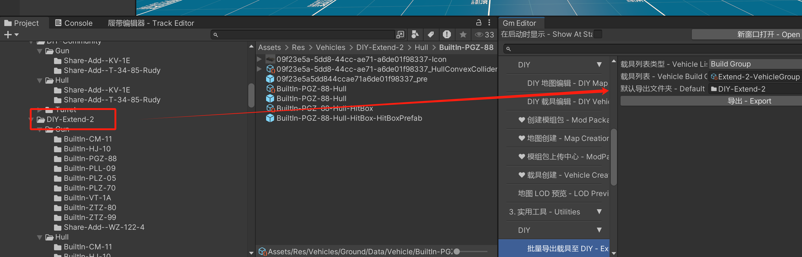
- 增加一键展览所有 DIY 配件功能，用于检查是否有配件的插槽配置错误
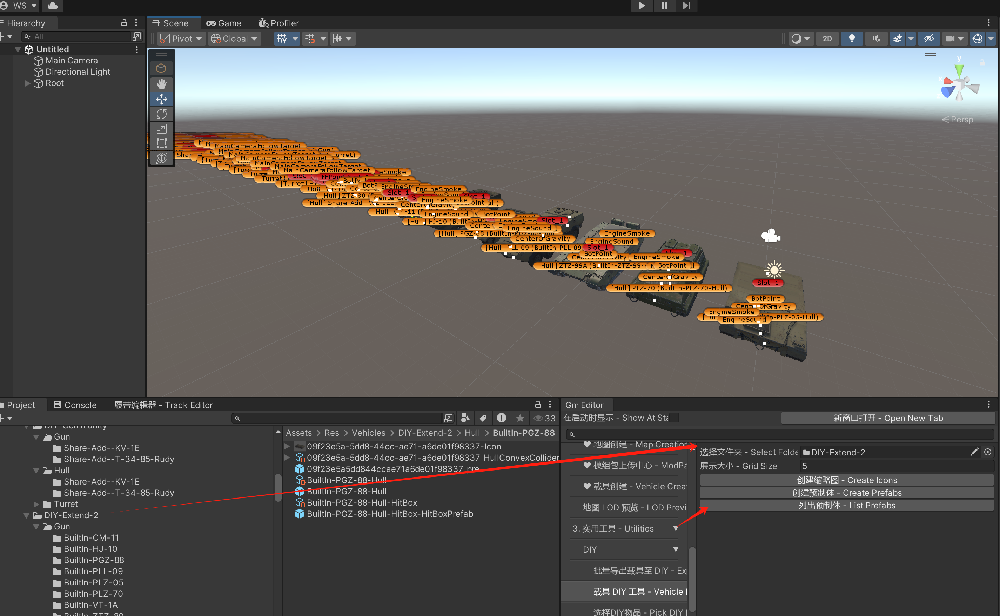
- 编辑器性能优化
- 载具数据对比工具
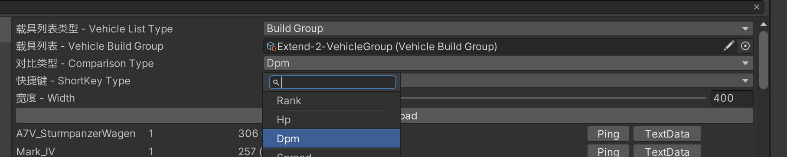
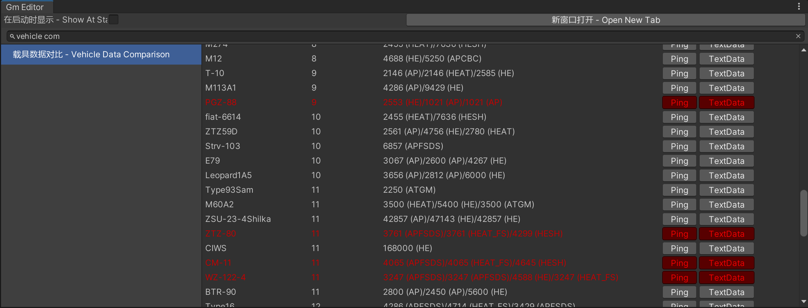
2024.12.2
- 增加快捷键 Ctrl + G 以打开编辑器工具
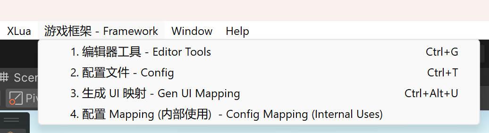
- 试车场增加靶车（需配置 LuaProject 路径，才可正常加载游戏资源）

- 遮罩贴图合并工具已合并至工具列表

2024.10.29
- 同步游戏代码至最新版本，支持 TV 弹的勾选
- 需复制 com.waveharmonic.crest 至工程目录，并覆盖 UnityProject/Packages 与 UnityURPProject/Packages 文件夹
2024.8.27
- 修复炮弹出生点错误
- 修复 Android 和 iOS 无法打包的问题
2024.8.10
- LOD 增加路径选项。
- 修复血条模式穿深计算错误
2024.8.9
- 同步新的后效逻辑
- 增加部分新后效的参数
- 如果开启新的 LOD，可以单独取消单个载具使用新 LOD
2024.7.15
- 修复超压可以对友军造成伤害的问题
- 修复窝弹区跳弹表现异常
- 优化工坊中 TNT 当量与爆炸范围的限制
- 除成员外，其他配件也可受超压影响（需要模组制作者勾选）
2024.7.14
- 支持编辑倒车履带曲线
- 增加多个人机瞄准点配置选项
- 新增炮弹信息调试工具，可从 Framework → GM → 炮弹调试打开。
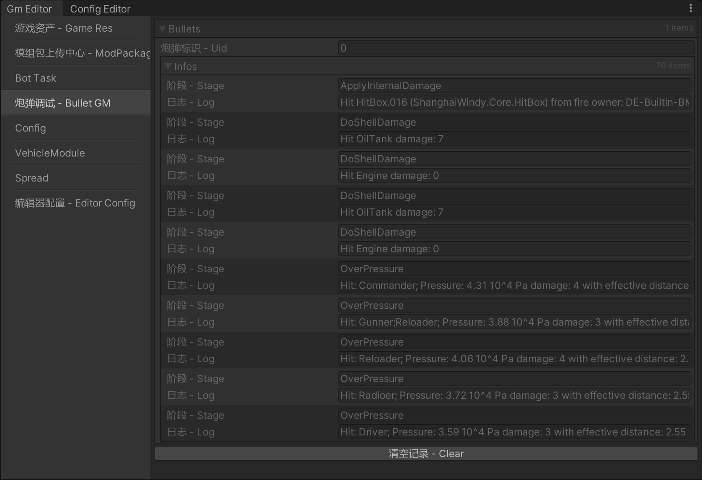
2024.5.15
- 增加油箱是否着火配置
- 观察镜增加是否可以控制主炮的选项
2024.5.2
- 增加占点配置
2024.4.30
- 预设队列
- 炮镜倍率设置
2024.4.22
载具的 LOD 文件已关闭 r/w，内存开销减半。需要重新打包所有载具，以更新 LOD 文件的信息
仅用于编辑器内预览的 SRP-Vehicle-Camouflage 着色器不再包含在构建中，以减少内存开销
2024.4.20
- Bank 一键导入。
2024.4.12
- 优化弹药边界工具
2024.4.11
- 增加 HP / 模组切换功能
2024.4.6
- 改进编辑器运行载具流程（VehicleData 上的试驾功能）
- 改善编辑器一键打包发布流程（Mod/模组批量打包管理）
2024.4.4
- 增加了载具的碰撞细化
- 上传模组支持本地 http 代理
- 模块可以设置为手动装填或自动装填
2024.3.21
- 增加模组上传工具
- 引擎运行版本变更为 2022.3.21f1
当时的 Unity Hub 安装地址为 unityhub://2022.3.21f1/bf09ca542b87。
2024.1.12
- 修复未安装 iOS module 时，部分模组工具不显示的问题
2024.1.11
- 增加自动保存
2023.12.30
- 三扩数据
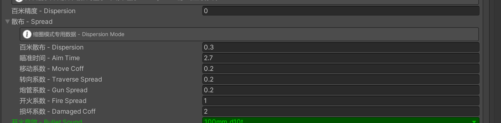
- Range Finder 功能

- 优化快速生成载具缩略图功能
2023.12.25
- 快速生成载具缩略图

- 载具自定义材质功能
2023.12.23
- 改进自定义材质编辑器功能
2023.12.21
- 增加自定义材质功能
2023.12.16
- 增加 pdb 调试日志，方便开发者定位编辑器报错
- 增加一批工程内置 BulletVFX 定义
- 优化部分界面的下拉框选择功能

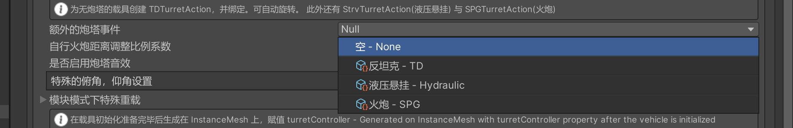
2023.7.23
- 修复斜穿公式计算错误
2023.7.18
- 增加固定穿深的弹头材质，ExplosionWarheadMaterial
- 细化不同弹种的弹头信息
2023.7.8
- 弹头材质增加斜穿参数 - Penetration Vs Angle Coff
- 模块与多炮塔的绑定改为使用配件 GUID。在 VehicleTextData 上，会根据多炮塔数据自动生成一系列 GUID；在模块上填写对应的 GUID，内部模块的 debuff 便会自动与对应炮塔关联
- 中的多年代改为数组，只需点击一次 VehicleInfo 数据，旧数据便会迁移到新的数组中
2023.6.24
- 增加飞机 Fmod 工程
2023.4.19 (1.0.10)
- 修复炮塔带缩放情况下，FFPoint 等节点出现位置偏差的问题
- 修复 Lua 断点无法识别文件名的问题；需选中已导入 Unity 的 lua 脚本，然后右键 Reimport
2023.4.17 (1.0.8)
- 修复了 Lua Property 字段在部分情况下解析异常的问题
- 修复了 Common 类型 Lua 脚本 OnStarted 未调用的问题
- 增加了一个 Common 类型 Lua 脚本 FollowCameraTutorial，用于轮播局内载具；在战斗中按 F1 生效
2023.4.16 (1.0.7)
- 修复了编辑器布局错误。
- 增加了校验工具，用于检查项目中是否存在损坏的资源。

目前支持检测：载具 LOD 是否丢失，VehicleHitBox 是否丢失。
- 修复了重新打开编辑器后 Vehicle Data Editor 出现的若干问题。
2023.4.15 (1.0.5)
- 修复了位于 Turret 下的副炮在打包时报错的问题；此 Bug 仅存在于周二及之后版本的编辑器工具中。
2023.4.14 (1.0.4)
- 增加了飞机仅在瞄准目标后才允许开火的选项。
2023.4.12
- 新增 Fmod 音效调试工具。
- 飞机炮塔增加了默认使用父物体纠正轴向的选项。
2023.4.9
- 试车场增加了对 FPS 武器的支持。
- 试车场增加了障碍物。
- 增加了 Lua Profiler，用于监控用户编写的 Lua 脚本性能。请注意耗时超过 0.1 ms 且每帧调用的脚本。
2023.4.6
- 打包付费模组时，强制检查是否已填写模组包 ID。
- 修复了炮弹页面文字乱码的问题。
- 修复了生成的 UI Lua 绑定代码中的错误。
2023.4.5
- 同步更新了 API。
2023.3.27
- 修复了部分 Lua 面板未显示同步 Property 按钮的问题。
- 瞄具图片与文本现在支持挂载 Lua 脚本。
2023.3.26
- 编辑器内试车场增加了一键更新数据按钮。

- 窗口增加了是否优先读取编辑器本地资源的选项。
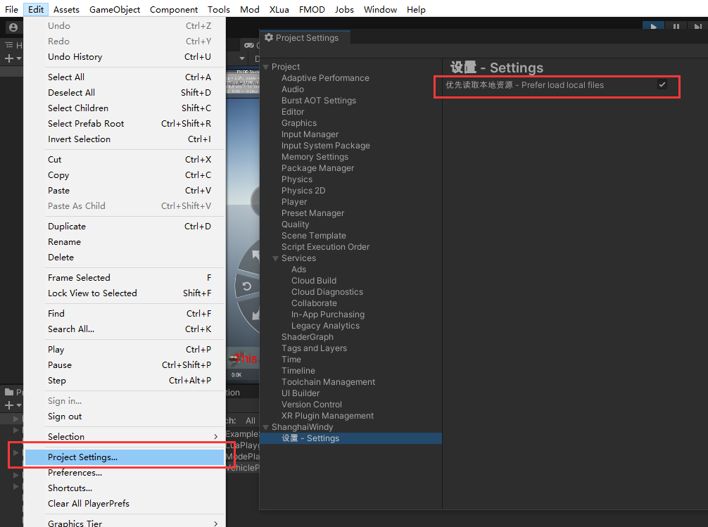
- 增加了 Lua Behavior 配置。

- 数据和 Text Data 数据现在都支持从编辑器直接读取，新数据无需重新打包即可生效。
- 类支持从 Lua 监听事件。
self.OnTotalDamageChanged = function(oldVal, newVal)
print(tostring(oldVal) .. " -> " .. tostring(newVal))
end
self.vehicle.basePlayerState.totalDamage:OnValueChanged("+", self.OnTotalDamageChanged)
- 增加了 LuaCommonInstanceData 类，用于通用脚本（如多炮塔载具的 GUI）。
2023.3.23
- 编写的载具脚本可以在不重新打包载具的情况下，优先读取编辑器内已修改的版本。
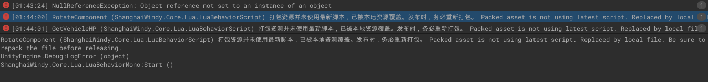
- 可在载具配置数据上直接挂载 Lua 脚本，便于统一管理。
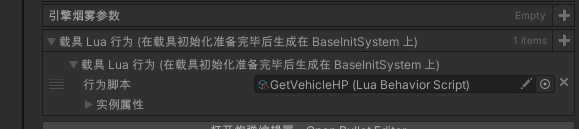
- 打包载具时，强制检查是否存在命名为 MainBody 的物体，以避免运行时报错。
- 文档增加了 PlayerState 相关的说明文档。
2023.3.21
- 增加了 Lua 模式的调试场景 ModePlayground.unity。
路径 Packages/com.shanghaiwindy.middlelayer/Tools/RuntimeDebugger/ModePlayground.unity
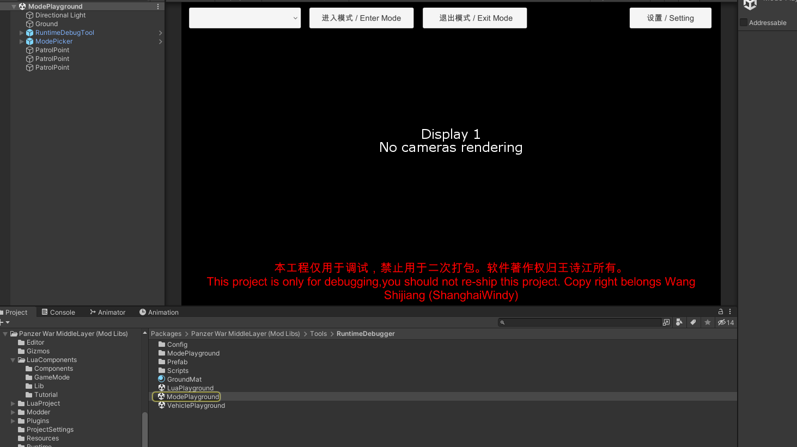
- 编辑器内的载具调试工具改名为 VehiclePlayground.unity。
路径 Packages/com.shanghaiwindy.middlelayer/Tools/RuntimeDebugger/VehiclePlayground.unity
- 新增了 TeamAPI，方便获取敌我队伍。
2023.3.20
- 侧进行了大改动，并提供了全新的教程文档。
2023.3.15
- 组件已公开，使用文档见：
- 增加了接口，请参考文档。在 xlua 中需要加上 CS. 前缀才能正常访问此类方法，例如 CS.ShanghaiWindy.Core.API.VehicleAPI。
2023.3.14
- 增加了更新 Extra Info 的按钮。
- 脚本示例放置在 MiddleLibLayer\LuaComponents 文件夹下，默认的 Template-Vehicle 已使用此示例脚本。
- 复制载具数据时，增加了自定义复制后载具 Asset Name 的面板。
- 模组包页面提示不要使用默认名称。
2023.3.13
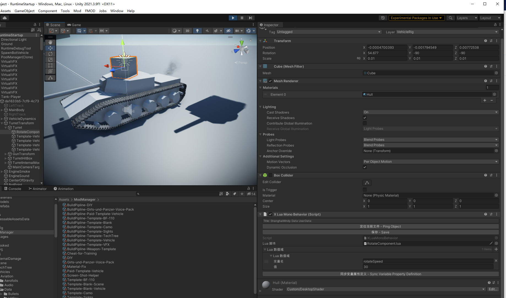
- 增加了对 Lua 组件（XLuaComponent）的支持；在 UnityProject 中，为 Template Vehicle 增加了一个示例旋转脚本。
- 界面支持点击查看生成的预制体。
2023.3.6
- 修复了部分情况下出现多个 HitBox 编辑窗口的问题。
- 为付费模组的 UUID 增加了长度校验，防止因 UUID 输入错误导致付费模组无法加载。
- 优化了部分界面的显示。
2023.3.5
- 修复了部分飞机打包后在游戏内不加载的问题；需要重新构建 BuildPipline。
- 修复了模块装甲编辑界面中厚度显示与实际值不一致的问题。
2023.3.2
- 修复了 LOD 生成缓存文件未清除过期 Mesh 的问题。
- 修复了部分情况下点击载具的 Pack 按钮会跳转到 LOD 数据的问题。
2023.3.1
- 修复了飞机编辑器中炮塔路径错误的问题。
- 修复了弹药编辑器中部分中文显示错误的问题。
- 增加了抗破厚度设置（游戏内暂时还未生效，将在后续版本支持）。
2023.2.23
- 修复了弹药架按名称倒序排序的问题。
- 拆解 DIY 载具时，自动创建共享数据，用于同步两侧数据。
2023.2.22
弹药架按名称排序。
生成 LOD 时，根据原始物体的 Layer 进行赋值。
2023.2.21
- 修复了由弹药架排序错误导致的报错。
2023.2.18
- 改进了 Vehicle Data 与 Vehicle HitBox 的编辑模式，防止在 Inspector 失去焦点的情况下无法编辑。
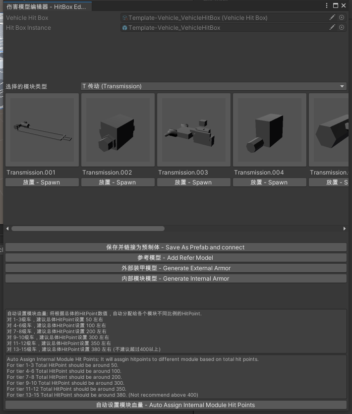
2023.2.15
- 修复了取消勾选模组加密选项后，仍生成带加密信息的模组包的问题。
- 为飞机增加了一些空引用检查。
- 修复了导入 DIY 地图时地形材质丢失的问题。
- 优化并汉化部分报错信息的显示。
2023.2.12
- 增加了 PrefabPackerGroup，可以批量重新生成坦克、飞机和 DIY 载具的预制体。
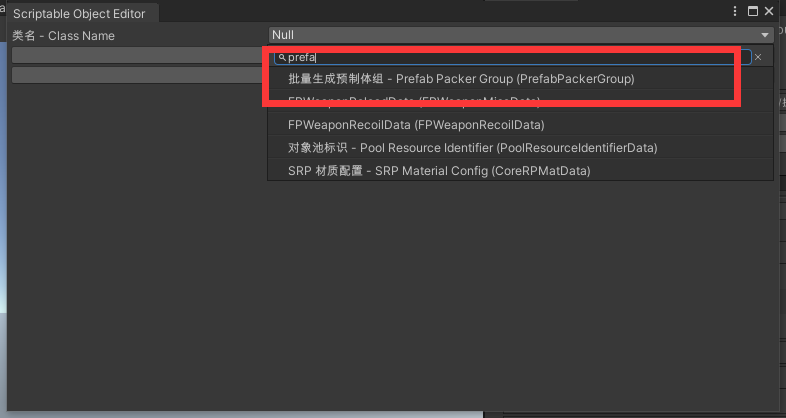

- 在打包流程中增加了选项，可在打包时自动重新 Pack 坦克、飞机和 DIY 载具。
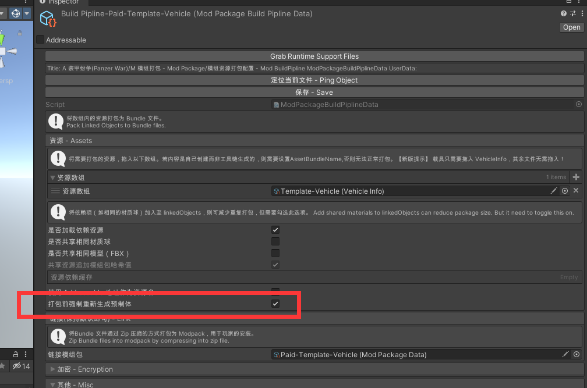
- 增加了 Lua Mono 组件，可以将 Lua 方法挂载到 GameObject 上进行运行。

2023.2.6
- 增加了对 IL Runtime DLL 的打包支持。
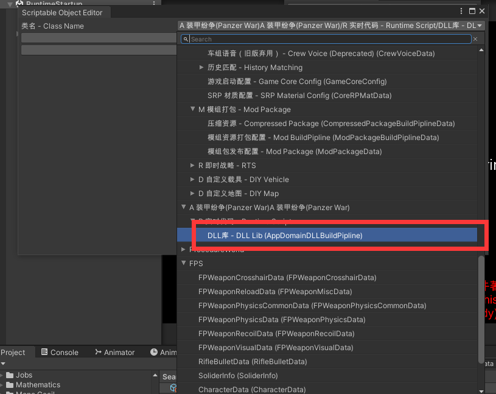
- 增加了编辑器工具的语言切换功能，可以仅显示中文，使界面更加清晰。
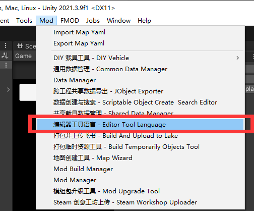
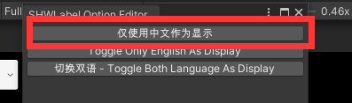

2023.2.2
- 增加了清空引用的选项。
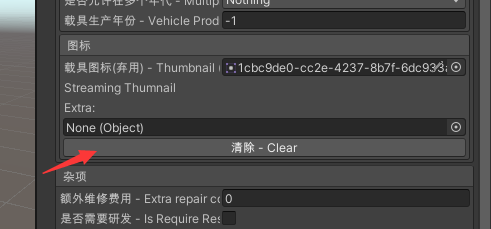
- 飞机编辑器在 Pack 时，会提示哪个物体存在引用错误。
- 飞机编辑器增加了提示。
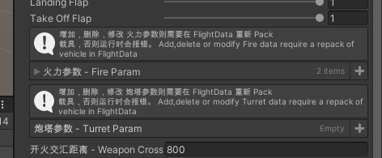
2023.1.28
- 常用资源已移至共享目录，迁移文档见：
- 修复了使用依赖打包的模组在实时调试工具内无法正常加载依赖的问题。
2023.1.26
- 载具缩略图改为 Streaming。
- 载具调试工具增加了设置界面，并将其资源更新至最新版本。
- 打包坦克、飞机和 DIY 载具时，会强制勾选 HitBox 与模块模型的 R/W（未勾选会导致非等比缩放时，游戏内报 Collision Mesh Data 错误）。
- 坦克增加了 Engine Smoke 数组。
2023.1.15
- 修复了载具打包后再次编辑导致 LOD 丢失的问题。同时，载具编辑速度也得到了优化！
- 优化了载具的打包速度，并减小了打包后载具包的大小。
2023.1.11
- 准镜支持自定义图片，并增加了文字覆盖及文字颜色设置。
- 生成 Prefab 时的验证逻辑中，移除了对旧音效的空值检查。
2022.1.2
- 修复了一些 Bug。
2022.12.18
- 修复了无法对坦克资源执行 Pack Assets 的问题。
- 针对轮式载具的轮子，现在会自动创建 Wrapper，以防止因建模软件轴向错误导致的旋转错误。
- 增加了将资产导出为 Unity Package 的快捷方式，便于向开发者反馈问题。详情见：
2022.12.17
- 增加了 mod package、Mod.io 与 Steam 创意工坊发布渠道。
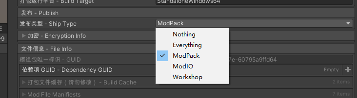
- 增加了创意工坊上传工具包（需手动将 package 添加到工程中，添加方式与 middle layer 一致）。


- 优化了打包时勾选依赖选项下的资源依赖处理。
2022.12.14
- 增加了 dds 转 png 的自动化流程。
2022.12.1
- 资源引用改为 GUID 引用，并兼容旧版本。
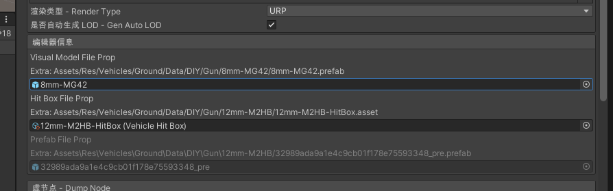
2022.11.30
- 结构修改。
- 工程结构发生重大变动，升级指南见：New Project Migration 新工程迁移
2022.11.27
- 增加了 Fmod 的模组支持。
2022.11.22
- 配置数据快速创建与搜索功能。

- 预制自定义贴图：将贴图文件解压到指定目录。

- 预设了 Fmod 音频事件，目前内置了一些坦克音效，可直接配置在坦克上。
位于：Assets/Res/Vehicles/Data/FMod

- 增加了额外的引擎烟雾配置点。
- 增加了自爆功能，可在 VehicleTextData 中配置，或通过新增的自爆组件实现。
2022.11.6
- 针对开启依赖资源加载的 BuildPipline，增加了可视化依赖日志。可通过搜索日志来检查资源冗余。
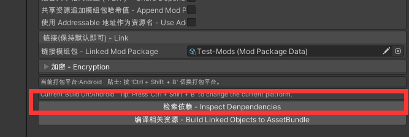

2022.11.1
- 支持发射组。
- 支持随主炮、副炮按钮一起开火。
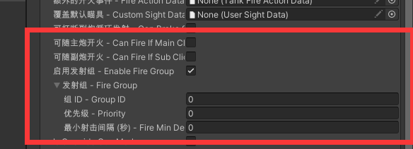
- 简单多炮塔的开火配置增加了 Dym。
2022.10.30
- 载具相关组件生成预制体时，将自动生成对应的 LOD。对于已存在的预制体，需点击“重新生成预制体”才能使 LOD 生效。
- 增加了 DIY 载具文件选取工具，用于批量选择 DIY 载具。
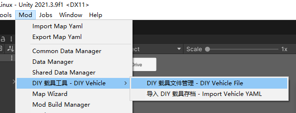

- 选中多个同类型的 DIY 载具配置时，会显示批量操作。

- 正式加入 DIY 拖挂。

2022.10.25
- 增加了将 DIY 存档导入为 DIY 载具配置的功能，方便模组开发者在提供配件模组的同时，附带一个预设载具。
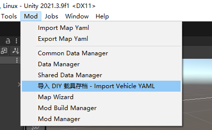
- 增加了拖挂的预览 DIY 组件。
- 增加了 SRP 材质兼容组件，用于特效中的模型材质。

2022.10.22
- 修复了创建新载具时，部分情况下名称未写入本地的问题。
2022.10.20
- 修复了部分窗口无法展开的问题。
2022.10.19
- 修复了载具无法导出贴图的问题。
2022.10.18
- 增加了 FireBall 与 Laser 弹种。
- 菜单下拉框本地化处理。
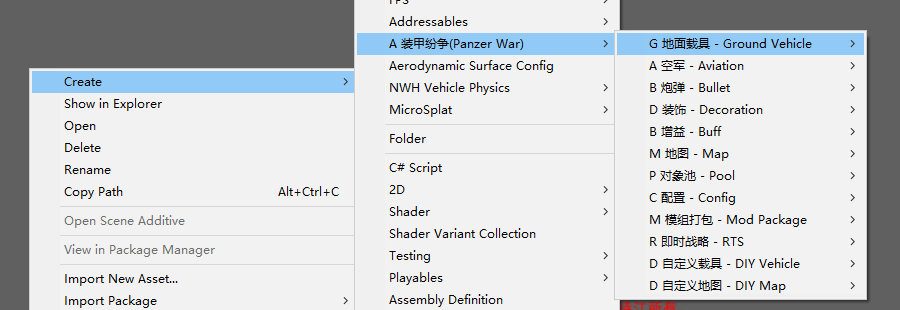
- 特效下拉框本地化处理。
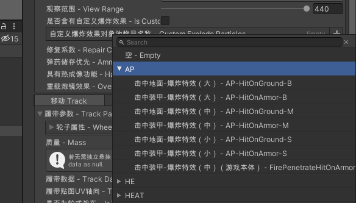
- 项目已升级到 Unity 2021.3.9f1。若要在编辑器中运行载具，必须升级到此版本，否则无法加载。
2022.9.14
- 修复了编辑器 Bug。
2022.9.8
- 增加了 VT 弹与弹链。
2022.8.29
- 编辑器增加了实时调试功能。
2022.8.21
- 增加了 Mech 的旋转参数 @宝马鸽。
- 增加了修复 Render 层级错误的工具。参见 模型显示排查。@制杖拉菲。
- 履带编辑器增加了节点统一 X 轴功能。
2022.7.12
- 修复了部分情况下弹药架排序导致无法打包载具的问题。
2022.5.8
- 修复了 DIY 载具打包及上传失败的问题。
- 增加了 ModPackage 构建脚本支持，详情查看文档： ModPackage 打包说明
- 修复了依赖资源仅对 DIY 内容生效的问题。
2022.4.30
- 模组包的 Hash 现在会被添加到依赖资源中，以防止加密模组包之间的资源依赖冲突。

- 修复了飞机和武器的 Vehicle Info 无法打包的问题。